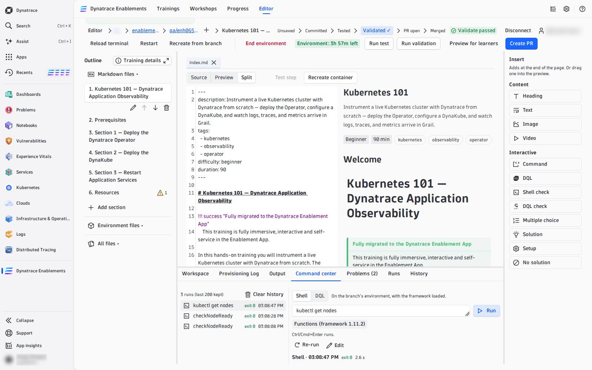
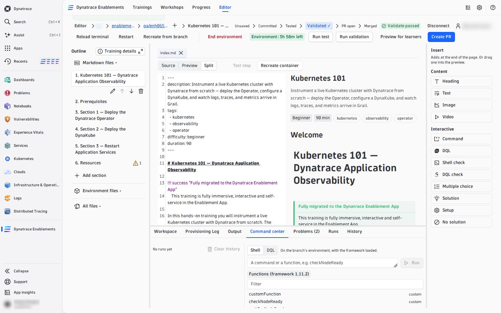

03 — Command Center#
The Command center tab in the dock is where you try things before you write them into a step: any shell command, any framework function, any function from your my_functions.sh, or any DQL query. It is the editor's scratchpad.
Run a shell command#
Choose Shell, type a command and press Run (or Ctrl/Cmd+Enter). It runs in your branch's environment with the framework loaded, exactly the way a check or a solution will run for a learner — so a command that passes here passes in the step.

- The result shows the exit code —
exit 0green, anything else red — and the output, stderr in red. - Stop cancels a command that runs too long.
- Unsaved edits are written into the environment first, so a function you just changed in
my_functions.shis the one that runs. - Without a running environment, Run is disabled with Start the environment to run shell commands.
Pick a framework function#
Under the input, Functions (framework <version>) opens a filterable list of every function your training can call: first the ones from your own my_functions.sh, marked custom, then the framework's — read at exactly the framework version your training pins in .devcontainer/util/source_framework.sh, so you are never offered a function your training does not have.

Picking a name puts it into the input; it never runs it. Press Run when you are ready. Full descriptions of the framework functions: Functions Reference and Automate the Environment.
Run DQL#
Choose DQL, write a query and press Run. It runs against your tenant — the one the environment's tokens were minted in — and shows the records as a table (or chart). Grail's own error message is shown verbatim, position included. No environment is needed for DQL.
Use it to build a dql-verification check: write the query here, with your own session id in place of {{DT_SESSION_ID}} (the Variables list in the Workspace tab shows it), until it returns rows after the step and none before. Then put it into the step with the template variable — see Template variables.
History#
Every run is kept in the history on the left — newest first, with its exit code or record count and time, up to 200 per branch, in this browser only. Pick one to see its output again, then Re-run it or Edit it back into the input. Clear history empties it.
Tokens are masked, not hidden from the environment
Dynatrace token values in the output and in the history are masked (dt0c01.**** (masked)). A command that contains a token is sent as typed but stored masked, so it cannot be re-run from the history — use Edit and paste the token again.
The terminal is still there#
For anything interactive — k9s, following logs, editing a file in place — use Open terminal in the Workspace tab: a real shell in a new window. The Command center is for commands you want to keep, compare and turn into steps.